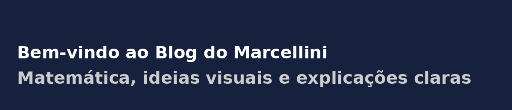

import numpy as np
import matplotlib.pyplot as plt
x = np.linspace(0, 2*np.pi, 100)
plt.plot(x, np.sin(x))
plt.title("Função Seno")
plt.show()📘 👨‍💻 📄 Quarto Markdown Templates — Complete Guide
programming
Quarto
article
Markdown
Quarto Markdown is a powerful extension of Markdown for creating high-quality scientific and technical documents, combining text, code, equations, graphics, and tables in a single reproducible workflow.
↠Back to the Programming Reading Guide 👨‍💻
↠Back to the Quarto Section 📄
↠Back to the Programming Section 👨‍💻

📘 👨‍💻 📄 Quarto Markdown Templates — Complete Guide
This post consolidates, in a single place, the content from “Markdown Model with Quarto — Part 1†and “Part 2”, removing repetitions and organizing examples in a smoother way.
🔷 What is Quarto Markdown?
Quarto Markdown extends traditional Markdown for scientific and technical communication.
It allows mixing formatted text, executable code (R, Python, Julia, Observable), LaTeX equations, graphics, and tables in a .qmd file, automatically generating:
- Interactive HTML
- PDF with typographic quality
- EPUB (eBooks)
- Slides (Reveal.js, Beamer)
- Websites and blogs
🔷 Difference Between Markdown and Quarto Markdown
| Feature | Markdown (.md) | Quarto Markdown (.qmd) |
|---|---|---|
| Basic text formatting | ✅ | ✅ |
| HTML support | ✅ | ✅ |
| LaTeX equations | ⌠(limited or via extensions) | ✅ (native) |
| Executable code | ⌠| ✅ (R, Python, Julia, Observable) |
| EPUB/PDF/Slides generation | ⌠| ✅ |
| YAML support | Partial | ✅ (metadata and project configuration) |
| Target audience | Simple text | Scientific/technical publications with code |
✅ Summary: use traditional Markdown for simple text; use Quarto Markdown when you need code, math, and visualizations in reproducible documents.
🔷 Essential Markdown Syntax (with Quarto)
Headings
# Level 1 Heading
## Level 2 Heading
### Level 3 HeadingVisualization:
Level 1 Heading
Level 2 Heading
Level 3 Heading
Emphasis
You can use **bold**, *italic*, or both: ***bold and italic***.Visualization:
You can use bold, italic, or both: bold and italic.
Quotations
You can also create quotations:
> Mathematics is the language with which God has written the universe. — Galileo- Visualização:
Mathematics is the language with which God has written the universe. — Galileo
🔷 Lists
Bulleted List:
- Item A
- Item B
- Subitem B.1
- Subitem B.2Visualization:
- Item A
- Item B
- Subitem B.1
- Subitem B.2
Numbered List:
1. First
2. Second
3. ThirdVisualization:
- First
- Second
- Third
🔷 Links e Images
Link
[Official Quarto website](https://quarto.org)Visualization:
Official Quarto website
Image
{width=20% style="margin-bottom: 2rem;"}Visualização:

🔷 Tables
| Name | Age | City |
|-|-|-|
| Alice | 25 | São Paulo |
| Bernardo | 30 | Salvador |
| Carla | 22 | Curitiba |Visualization:
| Name | Age | City |
|---|---|---|
| Alice | 25 | São Paulo |
| Bernardo | 30 | Salvador |
| Carla | 22 | Curitiba |
🔷 Equations with LaTeX
🔷 Inline Equation:
The famous Euler identity: $e^{i\pi} + 1 = 0$Visualization:
The famous Euler identity: \(e^{i\pi} + 1 = 0\)
🔷 Block Equation:
$$
\int_0^\infty e^{-x^2} \, dx = rac{\sqrt{\pi}}{2}
$$Visualization:
\[ \int_0^\infty e^{-x^2} \, dx = rac{\sqrt{\pi}}{2} \]
🔷 🧑‍💻 Code Blocks (Executable)
Python
R
🔷 💻 Display Code Without Execution in Quarto (Static)
To show code without executing it, use a regular fenced code block (three backticks) and specify a language for syntax highlighting (for example, python).
You can combine it with collapsible callouts for better organization.
::: {.callout-note collapse=true title="💡 Static code with syntax highlighting (collapsed content)"}
```python
# Example of Circle Area Calculation
import math
raio = 5
area = math.pi * raio**2
print(f"The circle area is {area:.2f}")
```
:::Visualization:
Note💡 Static code with syntax highlighting (collapsed content)
# Example of Circle Area Calculation
import math
raio = 5
area = math.pi * raio**2
print(f"The circle area is {area:.2f}")🔷 💡 Callouts (Highlight Boxes)
Use callouts to emphasize important information:
🔔 Note
::: {.callout-note}
This is an informational note.
:::Visualization:
Note
This is an informational note.
💡 Tip
::: {.callout-tip}
Tip: use `{.callout-tip}` for best practices.
:::Visualization:
Tip
Tip: use {.callout-tip} for best practices.
âš ï¸ Warning
::: {.callout-warning}
Warning: make sure the code is properly indented.
:::Visualization:
Warning
Warning: make sure the code is properly indented.
🚫 Caution
::: {.callout-caution}
Caution: changes in `.qmd` files may overwrite generated `.md` files.
:::Visualization:
Caution
Caution: changes in .qmd files may overwrite generated .md files.
📣 Important
::: {.callout-important}
Important: Quarto replaces RMarkdown with more modern features!
:::Visualização:
Important
Important: Quarto replaces RMarkdown with more modern features!
🔷 🯠Useful Emojis (Quick Reference)
-
Tags & Categories: 🏷️ 📚 🧠🧮 📈 🔬 🧪 💻 📊 🧰 🌠📠🔧 📠🚀 📰
-
Education: 📚 🧠âœï¸ 📖 🫠📠📊 ğŸ¯
-
Computing: 💻 🖥️ 📱 ⌨️ 🖱️ ⚙️ 🔧 🔒 🧮
-
Statistics & Data: 📊 📈 📉 📋 🔢 🧮 🗃️
-
Mathematics: â• â– âœ–ï¸ â— âˆš ∑ ∫ ∠📠📠ğŸ²
-
Science: 🧪 🔬 ⚗️ 🧫 🌡️ 🧬 🚀 🧲 🌌
-
Time/Organization: 🕒 📅 Ⳡ📌 ğŸ—“ï¸ ğŸ—‚ï¸ ğŸ“¦
-
Navigation: 🌠🧠📠🗺ï¸
- Highlight/Engagement: 💡 ◠✅ â“ âš ï¸ ğŸ› ï¸ â±ï¸ 📢 🔠🔠🚀 🉠👠🤠🤔 🙌 🔠🔄 💬
🔷 ✅ Conclusion
Quarto Markdown is ideal for creating reproducible, beautiful, and interactive work.
With it, you can produce everything from simple notes to complete scientific reports, keeping everything version-controlled and automated.
↠Back to the Programming Reading Guide 👨‍💻
↠Back to the Quarto Section 📄
↠Back to the Programming Section 👨‍💻
🔠Back to Top
Blog do Marcellini — Exploring Mathematics, Statistics, and Physics with Rigor and Beauty.
Note
Created by Blog do Marcellini with ❤️ and code.
🔗 Useful Links
- 🧑‍🏫 About the Blog
- 💻 Project GitHub
- 📬 Contact via Email